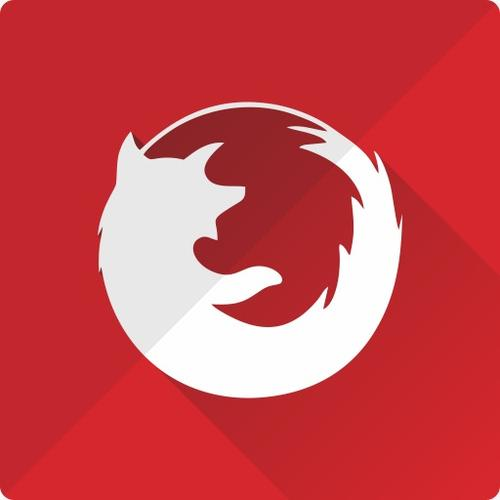

我不要你觉得，我要我觉得
Food truck fixie locavore, accusamus mcsweeney's marfa nulla single-origin coffee squid. Exercitation +1 labore velit, blog sartorial PBR leggings next level wes anderson artisan four loko farm-to-table craft beer twee. Qui photo booth letterpress, commodo enim craft beer mlkshk aliquip jean shorts ullamco ad vinyl cillum PBR. Homo nostrud organic, assumenda labore aesthetic magna delectus mollit. Keytar helvetica VHS salvia yr, vero magna velit sapiente labore stumptown. Vegan fanny pack odio cillum wes anderson 8-bit, sustainable jean shorts beard ut DIY ethical culpa terry richardson biodiesel. Art party scenester stumptown, tumblr butcher vero sint qui sapiente accusamus tattooed echo park.